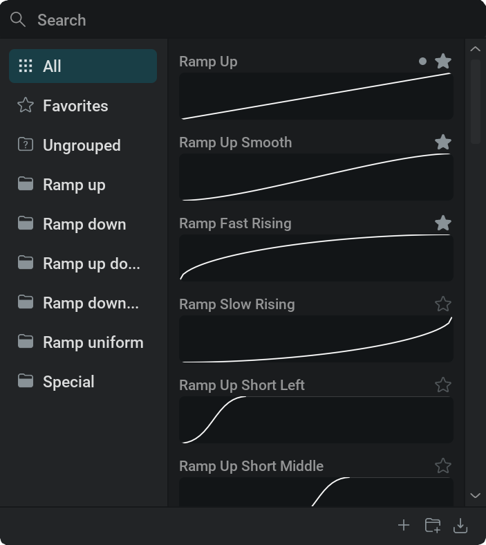
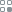
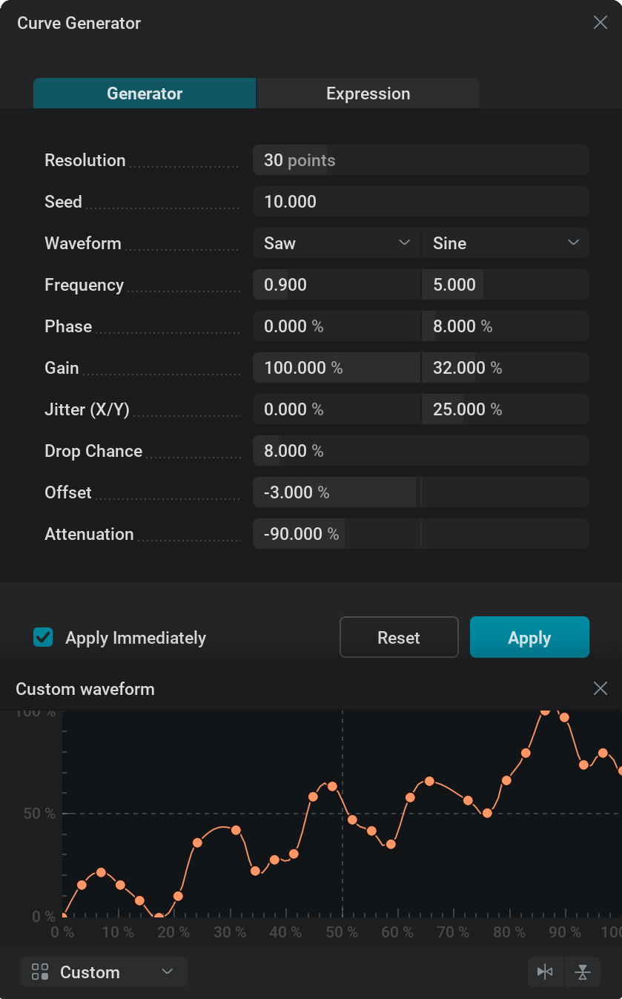

调制曲线#
调制曲线用于基于两个轴映射数值。
曲线编辑#
如需更精确地编辑，可以单击曲线旁边的 图标，打开更大的 Remapping curve 窗口。可以通过 单击并拖动窗口角来缩放此窗口，也可以单击右上角的 图标，或属性面板中曲线旁边的 图标来关闭窗口。
按下 Ctrl + A
使用 Delete 键可删除选中的曲线点。也可以使用该点的右键菜单并选择 Delete。
使用
 按钮，或在图表右键菜单中选择 Flip Vertically，可将图表中的所有曲线点垂直翻转。
按钮，或在图表右键菜单中选择 Flip Vertically，可将图表中的所有曲线点垂直翻转。
{kind=link}
{kind=link}
{kind=link}
{kind=link}
{kind=link}
“Interpolation Mode（插值模式）”定义从一个曲线点到另一个曲线点时数值的插值方法。
可以在右键菜单中更改曲线点的 Interpolation Mode（插值模式）。
- 可用选项如下：
Bézier 会根据 Bézier 手柄对数值进行插值。使用此模式时，选中单个曲线点后可以看到 Bézier 手柄。可以通过 LMB 并拖动 Bézier 手柄末端的点来调整插值。曲线平缓的部分表示数值变化较慢，曲线陡峭的部分表示数值变化较快。
Smooth 会在一个曲线点到另一个曲线点之间生成平滑曲线，避免生硬过渡。
Linear 数值会从一个曲线点线性移动到另一个曲线点。这有助于获得非常可预测的结果，但也可能产生机械感较强的过渡。
Constant 数值会保持恒定，直到到达下一个曲线点。因此数值会出现跳变。
- 使用 Bézier 模式时，可以使用几种手柄类型；它们同样位于右键菜单中。
Aligned 手柄可以自由移动，方向和长度都不受限制。对于此类型，一个手柄始终位于另一个手柄的反方向，并且长度相同。
Free 两侧手柄可以彼此独立地任意移动。
Auto Clamped 这是默认行为。对于此类型，手柄绝不会越过前一个或后一个曲线点。请注意，修改手柄后，类型会被设置为 Aligned。
Auto Vectored 这会让左侧手柄指向前一个曲线点，右侧手柄指向后一个曲线点。请注意，修改手柄后，类型会被设置为 Free。
始终可以点击 Reset Handle（位于右键菜单中），将所选曲线点的 Bézier 手柄重置为默认值。
保存和加载曲线#
任何调制曲线都可以保存到硬盘，供以后使用！
如果经常使用某条特定的自定义曲线，可以将其保存，并在任意项目中加载。
加载后的曲线仍然可以在调制曲线编辑器中编辑，因此也可以将其作为起点或自定义预设。
文件浏览器会弹出，你可以导航到想要保存曲线或加载曲线的文件夹。
要保存曲线，请提供文件名并使用文件浏览器中的 Save 按钮。
系统会自动添加 .jfxcurve 扩展名，并将你的自定义曲线文件保存到硬盘。
要加载曲线，请在文件浏览器中选择带有 .jfxcurve 扩展名的文件，并使用 Open 按钮。
如果决定不加载或保存曲线，请使用文件浏览器中的 Cancel 按钮。
{kind=link}
曲线预设#
{kind=link}

单击带有 
{kind=link}
左侧区域是可包含曲线预设的分类或文件夹列表：
 All 包含所有已保存的曲线预设。
All 包含所有已保存的曲线预设。 Ungrouped 包含所有不在文件夹内的预设。如果预设被移到这里，或在选中 All, Favorites，或 Ungrouped 分类时添加，它就会进入 Ungrouped。
Ungrouped 包含所有不在文件夹内的预设。如果预设被移到这里，或在选中 All, Favorites，或 Ungrouped 分类时添加，它就会进入 Ungrouped。Folders 可由用户创建，用来组织曲线预设。可使用右下角的 按钮完成。如果选中了文件夹，新添加的预设会放入该文件夹。可以通过 单击文件夹并选择 Rename 或 Delete。也可以通过 单击并拖动来移动文件夹位置。
{kind=link}
{kind=link}
{kind=link}
右侧区域是调制曲线预设列表：
单击曲线预设时出现的上下文菜单包含以下选项：
 Delete： 完全移除该曲线预设。此操作无法撤销！
Delete： 完全移除该曲线预设。此操作无法撤销！
{kind=link}
{kind=link}
{kind=link}
{kind=link}
{kind=link}
顶部的 搜索功能允许根据名称搜索曲线预设。无论预设属于哪个文件夹，它都会始终搜索所有预设。
{kind=link}
窗口底部还有几个选项：
{kind=link}
Curve Generator#
另一种创建调制曲线的方法，是使用 Curve Generator。
要打开 Curve Generator ，请在图表中单击并选择 Curve Generator…（位于上下文菜单中）。
打开 Curve Generator 窗口后，曲线会由生成器控制；图表上的发光效果会提示这一状态。
来看一下使用 Generator 选项卡控制曲线的选项：
{kind=link}

Resolution： 指定用于构建曲线的点数量。更多点可以创建更细致的曲线；更少点则让曲线之后更容易编辑。
Seed： 使用 Jitter (X/Y) 参数时，不同数字会产生不同随机变化；使用 Drop Chance 参数。
请注意，接下来的四个参数被分为两列，分别控制不同的波形！默认情况下，右侧列不会影响曲线，因为该波形的 Gain 参数设置为 0%！
- Waveform： 决定曲线形状的函数类型。
Sine：正弦波，平滑地上下振荡。
Saw：沿取模曲线振荡，数值会在每个周期突然重置为同一个值。
Pulse：在顶部值和底部值之间来回突然切换。
Frequency： 0% 到 100% 范围内的波形周期数量。
Phase： 函数的相位。可以用它水平移动波形。
Gain： 波形强度。100% 时，波形会使用整个图表在 0% 到 100% 之间振荡；0% 时，波形会从 50% 振荡到 50%，变成一条直线（这些值可以通过 Offset parameter偏移）。使用 Gain 参数就像在垂直轴上缩放波形。此参数也用于将两个不同波形混合在一起。
Jitter (X/Y)： 改变曲线点的位置。请注意，这与波形无关，并会影响所有曲线点。左侧滑块会在图表上随机水平移动曲线点，右侧滑块会随机垂直移动曲线点。百分比越高，曲线点离原始位置越远；100% 会在 0 到 100% 的范围内随机移动曲线点。此参数可为数学上平滑的波形形状添加一些有机变化。若要获得不同的位置随机化结果，可以使用不同的 Seed 参数。
Drop Chance： 曲线点从曲线中被移除的百分比概率。它有助于在曲线上更随机地分布细节，从而创建更自然的曲线。0% 表示不会删除任何曲线点，100% 表示所有曲线点都会被删除，基本等同于移除曲线。使用不同的 Seed 参数。
Offset： 偏移整条曲线的垂直位置。可用于垂直移动调制曲线。曲线点位置会被限制在 0% 到 100% 范围内。
Attenuation： 调制曲线的强度。可用于垂直缩放整条曲线。例如， -100% 会垂直翻转曲线。
Apply Immediately： 如果勾选此复选框，在 Curve Generator 中所做的所有更改都会立即应用到调制曲线，因此可以在视口中看到结果。如果未勾选，你可以在图表中看到正在创建的曲线，但每次在 Curve Generator 中更改参数时，它的效果不会立即应用到项目；如果单击 （位于 Curve Generator 的右上角），则仍会保留打开 Curve Generator 窗口。
Reset： 将 Curve Generator 中的所有参数设置为默认值，创建一条基础正弦波曲线。
Apply： 将生成的曲线应用到项目中的调制曲线，并关闭 Curve Generator 窗口。
来看一下使用 Expression 选项卡控制曲线的选项：
Resolution（分辨率）参数以及 Apply Immediately（立即应用）、 Reset、 Apply 选项与 Generator 选项卡共享，这意味着它们具有相同功能，并且在任一选项卡上所做的更改都会反映到两个选项卡中。
Expression： 可以在此文本框中输入数学表达式来创建曲线。利用
x变量以及受支持的数学运算符、常量和函数；完整列表可在 表达式 页面查看。可以尝试1-x,sin(x*pi*2)*0.5+0.5,sin(x*pi*4)*(1-x)*0.5+0.5,pow(x, 6),1-pow(x, 6),x*((rand()+1)/2)，或(sin(x*pi*2)+normal()*0.1)*0.5+0.5。Range X,Y： 表达式会生成无限延伸的数学曲线，而调制曲线需要截取其中一段来使用。这一段由这些范围参数指定，就像对表达式创建出的曲线进行放大或缩小。